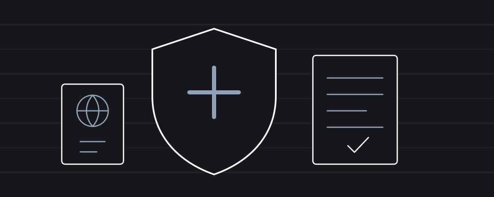

Ασφαλιστικά · Ιούνιος 2025
Προαιρετική ασφάλιση υπέρ κλάδου υγείας για συνταξιούχους από τρίτες χώρες: όροι και διαδικασία υπαγωγής
Οι προϋποθέσεις, τα δικαιολογητικά, οι εισφορές και η διαδικασία στον ΕΦΚΑ, στα ελληνικά και στα αγγλικά.

Μαρία Παπαδάκη
Οικονομολόγος - Λογίστρια Α΄ τάξης
Στο πλαίσιο της προστασίας της δημόσιας υγείας και της κοινωνικής ένταξης, η ελληνική νομοθεσία επιτρέπει σε πολίτες τρίτων χωρών που διαμένουν νόμιμα και μόνιμα στην Ελλάδα, να υπαχθούν προαιρετικά στην ασφάλιση υγειονομικής περίθαλψης μέσω του ΕΦΚΑ, εφόσον πληρούν συγκεκριμένες προϋποθέσεις.
Νομικό Πλαίσιο και Δικαίωμα Υπαγωγής
Σύμφωνα με το άρθρο 1, παρ. 1 του ν. 4251/2014 (Α' 80), πολίτες τρίτων χωρών, καθώς και τα εξαρτώμενα μέλη της οικογένειάς τους, έχουν δικαίωμα πρόσβασης σε παροχές ασθένειας, υπό την προϋπόθεση ότι πληρούν τα παρακάτω κριτήρια.
Βασικές Προϋποθέσεις
1. Νόμιμη και Μόνιμη Διαμονή
Ο ενδιαφερόμενος πρέπει να διαθέτει ισχύουσα άδεια διαμονής τύπου «συνταξιούχου» (π.χ. βάσει του Ν. 4939/2019), που να τεκμηριώνει τη μόνιμη παραμονή του στην Ελλάδα. Δεν αρκεί βραχύχρονος τίτλος ή θεώρηση εισόδου.
2. Απόκτηση ΑΜΚΑ
Για την εγγραφή στο σύστημα κοινωνικής ασφάλισης απαιτείται η έκδοση ΑΜΚΑ. Η διαδικασία γίνεται μέσω ΚΕΠ ή ΕΦΚΑ με τα εξής δικαιολογητικά:
- Διαβατήριο
- Άδεια διαμονής
- Απόδειξη κατοικίας (λογαριασμός ΔΕΚΟ ή μισθωτήριο)
3. Μη Κάλυψη από Άλλο Φορέα
Δεν πρέπει να υπάρχει ισχύουσα κάλυψη από άλλον δημόσιο ή ιδιωτικό φορέα υγειονομικής ασφάλισης, είτε ως άμεσος είτε ως έμμεσος ασφαλισμένος (π.χ. μέσω S1).
Διαδικασία Υποβολής Αίτησης και Έναρξης Ασφάλισης
1. Συγκέντρωση Δικαιολογητικών
Ο ενδιαφερόμενος πρέπει να έχει:
- Διαβατήριο και άδεια διαμονής
- ΑΜΚΑ και (προαιρετικά) ΑΦΜ
- Απόδειξη κατοικίας
- Τραπεζικό λογαριασμό στην Ελλάδα
- Απόδειξη συνταξιοδοτικού εμβάσματος από την τρίτη χώρα
2. Επίσκεψη στον ΕΦΚΑ
Η υποβολή της αίτησης γίνεται στο κατά τόπους υποκατάστημα ΕΦΚΑ (μισθωτών ή μη μισθωτών), με ρητή αναφορά σε «προαιρετική ασφάλιση παροχών ασθένειας πολίτη τρίτης χώρας».
3. Συμπλήρωση Αίτησης
Το έντυπο περιλαμβάνει:
- Προσωπικά στοιχεία
- Στοιχεία άδειας διαμονής
- Τραπεζικό IBAN
- Υπεύθυνη δήλωση για τη μόνιμη διαμονή και μη κάλυψη από άλλο φορέα
4. Κατάθεση Φακέλου
Υποβάλλονται φωτοτυπίες:
- Διαβατηρίου & άδειας διαμονής
- ΑΜΚΑ, ΑΦΜ (αν υπάρχει)
- Απόδειξης κατοικίας
- Συνταξιοδοτικού εμβάσματος
5. Έκδοση Αποδεικτικού Ασφαλιστικής Ικανότητας
Μετά από έγκριση της αίτησης από την Επιτροπή και την καταβολή δύο πρώτων μηνών των εισφορών, χορηγείται ασφαλιστική ικανότητα. Οι μηνιαίες εισφορές καταβάλλονται βάσει του μηνιαίου εμβάσματος σύνταξης.
Υπολογισμός Εισφορών
1. Ποσοστό Εισφορών
Οι εισφορές ανέρχονται σε 8,5% του εισοδήματος από τη σύνταξη.
2. Μηνιαίες Πληρωμές
Η πρώτη δόση καταβάλλεται εντός 30 ημερών από την αίτηση. Η κάλυψη ξεκινά από την 1η του επόμενου μήνα . Πληρωμές γίνονται μέσω τραπεζικού λογαριασμού.
3. Έναρξη Κάλυψης
Η ασφάλιση ισχύει από την 1η του μήνα μετά την πληρωμή και περιλαμβάνει:
- Νοσηλεία σε δημόσια/συμβεβλημένα νοσοκομεία
- Διαγνωστικές εξετάσεις
- Φαρμακευτική κάλυψη με συμμετοχή 25%
Ανανέωση & Τήρηση Υποχρεώσεων
1. Ετήσια Ανανέωση
Η ασφαλιστική ικανότητα ανανεώνεται κάθε 12 μήνες ή νωρίτερα εάν λήγει η άδεια διαμονής.
2. Υποχρέωση Ενημέρωσης
Οποιαδήποτε αλλαγή σε άδεια παραμονής, στοιχεία κατοικίας ή τραπεζικού λογαριασμού πρέπει να δηλώνεται εντός 30 ημερών.
3. Διακοπή Κατοικίας ή Νέο Καθεστώς
Εάν ο ασφαλισμένος αποχωρήσει από την Ελλάδα ή αποκτήσει νέο ασφαλιστικό καθεστώς (π.χ. S1), οφείλει να δηλώσει εγγράφως την παύση της ασφάλισης.
Σημαντικές Παρατηρήσεις
- Έντυπο S1: Σε περιπτώσεις διμερών συμφωνιών με τρίτες χώρες, το S1 μπορεί να παρέχει εναλλακτική κάλυψη, χωρίς ανάγκη προαιρετικής ασφάλισης.
- Οφειλές προς ΕΦΚΑ: Τυχόν εκκρεμότητες παλαιότερων ετών πρέπει να ρυθμιστούν για νέα ασφάλιση.
- Προϋπάρχουσες παθήσεις: Δεν αποκλείονται ούτε επιβαρύνονται με επιπλέον εισφορές.
- Φαρμακευτική Κάλυψη: Ισχύουν οι ίδιες ρυθμίσεις με τους Έλληνες ασφαλισμένους.
Συμπερασματικά
Η διαδικασία υπαγωγής στην προαιρετική ασφάλιση για συνταξιούχους τρίτων χωρών είναι απολύτως θεσμοθετημένη και επιτρέπει την πλήρη υγειονομική κάλυψη στην Ελλάδα, εφόσον τηρούνται οι απαραίτητες προϋποθέσεις. Η σωστή πληροφόρηση και η συνεπής τήρηση των υποχρεώσεων διασφαλίζουν την ομαλή ένταξη στο σύστημα κοινωνικής προστασίας.
English version
Voluntary Health Insurance for Pensioners from Third Countries: Conditions, Application Steps and Coverage Activation
According to paragraph 1 of Article 1 of Law 4251/2014 (Government Gazette A' 80), citizens of third countries, as well as their family members (indirectly insured), are entitled to health benefits as long as they meet the following conditions:
Eligibility Requirements
1. Legal and Permanent Residence
The applicant must hold a residence permit specifically for pensioners (e.g., under Law 4939/2019) or another valid permit proving legal and permanent stay in Greece. A mere visa or short-term residence title is not sufficient.
2. Possession of AMKA (Social Security Number)
To gain access to health benefits through EFKA (Unified Social Security Fund), one must have an AMKA. It is typically issued at a Citizens' Service Center (KEP) or EFKA office upon presenting:
- A valid passport
- A valid residence permit (as proof of legal stay)
- Proof of residence (e.g., utility bill, rental contract)
3. No Coverage by Another Health Provider
The applicant must not already be covered, either directly or indirectly (as a family member), by another public or private health provider in Greece (e.g., through form S1 from another country via EOPYY).
Steps for Submitting the Application and Starting Coverage
1. Required Documentation
Before visiting EFKA, the pensioner should prepare:
- Valid passport (for nationality identification)
- Valid residence permit (type for pensioners or equivalent permanent status)
- AMKA (must be issued beforehand via KEP or EFKA office)
- AFM (Tax Identification Number – optional but commonly requested)
- Proof of residence (e.g., utility bill, rental agreement)
- Bank account in a Greek bank (for paying monthly contributions)
2. Visit to Local EFKA Branch (for employees or self-employed)
The pensioner must visit the nearest EFKA branch (for self-employed – former OAEE, OGA, etc. – or for employees – former IKA-ETAM) to initiate or renew their health insurance coverage. At the entrance, inform the staff that the purpose is: "Voluntary health insurance for a third-country national pensioner."
3. Filling and Signing the "Application – Declaration for Voluntary Insurance"
The form requires:
- Personal details (full name, father's name, AMKA, AFM)
- Residence permit number and expiration date
- IBAN for a Greek bank account for contribution deductions
- Declaration of permanent residence and no other health coverage
4. Submission of Documents
Alongside the application, submit:
- Copy of passport (data page + visa/residence permit page)
- Copy of residence permit
- Copy of AMKA (or apply for AMKA beforehand)
- Proof of residence (e.g., utility bill)
- Copy of AFM (if available)
- Copy of pension remittance from the third country
5. Issuance of Proof of Insurance Eligibility
The application is recorded and reviewed by the committee. If approved, health coverage is granted after payment of two months' contributions. The insured must visit EFKA each month with a copy of the pension remittance to obtain the monthly payment code.
Contribution Calculation and Payment
1. Contribution Rate
Voluntary health insurance contributions for in-kind benefits (i.e., health care through EFKA) are set at 8.5% of the declared pension amount.
2. Monthly Payments
The pensioner usually pays the first contribution within 30 days of applying, activating coverage from the 1st day of the following month. Thereafter, monthly payments are made via standing bank order or e-banking.
Practical Tip: If the first payment is delayed, coverage starts from the date of payment, not application.
3. Coverage Start Date
Health coverage starts from the 1st of the month after contribution payment. For example, if payment is made on June 15, coverage begins on July 1. Basic benefits include:
- Hospital care in public or contracted hospitals (subject to EFKA rules)
- Outpatient services (lab and imaging tests at contracted private clinics)
- Prescription medication (with 25% co-payment, as applies to Greek citizens)
Renewal and Continuation of Coverage
1. Annual Visit to EFKA
Every 12 months (or earlier if the residence permit expires), the pensioner must visit EFKA again to renew their health insurance. They must either:
- Re-submit the voluntary insurance application (with updated documents), or
- Inform EFKA of any changes (e.g., renewed residence permit, new bank account)
2. Reporting Changes
If there are any changes in legal residence status (e.g., permit renewal, change of permit type), the pensioner must submit the updated document to EFKA within 30 days, or risk losing coverage.
3. Termination Due to Moving or New Coverage
If the pensioner no longer resides in Greece or gains health coverage through another provider (e.g., form S1 abroad), they must notify EFKA in writing to terminate their voluntary insurance.
Additional Notes and Points of Attention
1. Form S1 (for coverage in EU/EEA/Switzerland)
If a third-country pensioner is eligible due to bilateral agreements (e.g., Canada, Israel), they might receive health benefits via form S1, which is issued by EFKA. In that case, voluntary insurance does not apply.
2. Outstanding Debts
If the pensioner has unpaid health contributions from previous years, they cannot obtain new coverage until the debts are settled (via payment or repayment plan).
3. Pre-existing Conditions
EFKA's voluntary health insurance does not exclude or increase premiums based on pre-existing conditions. This differs from private insurance providers, which often apply such restrictions.
4. Pharmaceutical Coverage
At public hospital pharmacies, the third-country insured pays the same 25% co-payment for medication as Greek employees, with reimbursement handled by EOPYY.
Το άρθρο γράφτηκε τον Ιούλιο του 2023. Οι διατάξεις και οι διαδικασίες μπορεί να έχουν αλλάξει. Έχει ενημερωτικό χαρακτήρα και δεν αποτελεί εξατομικευμένη συμβουλή.